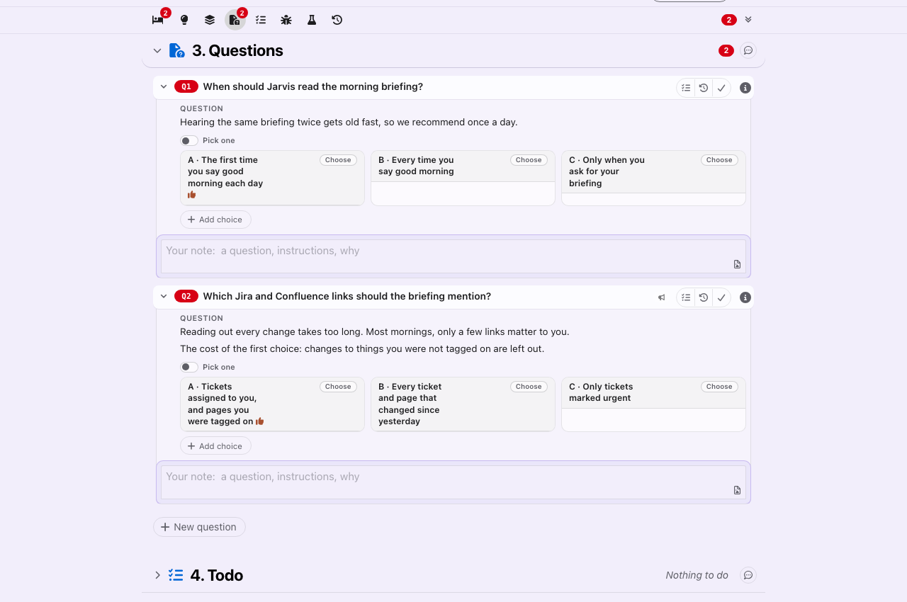
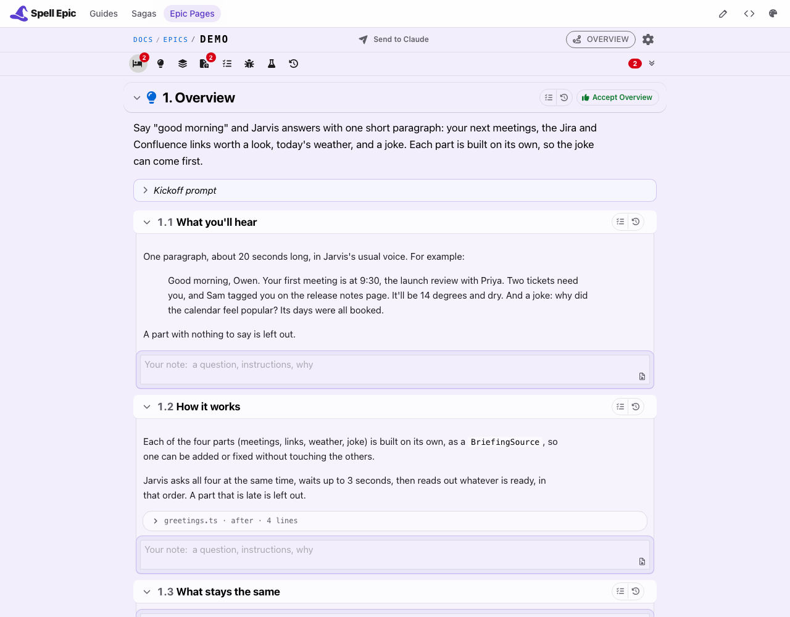
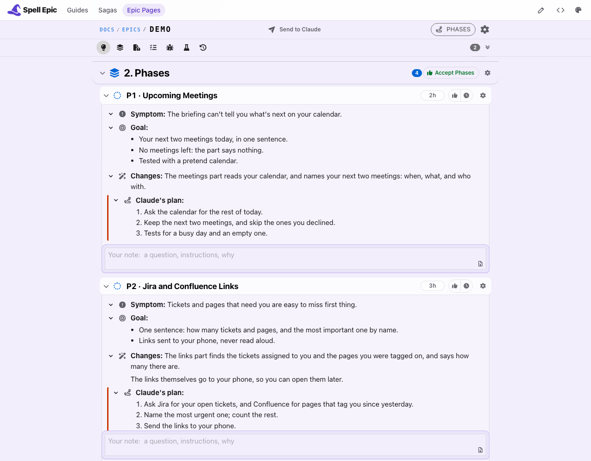
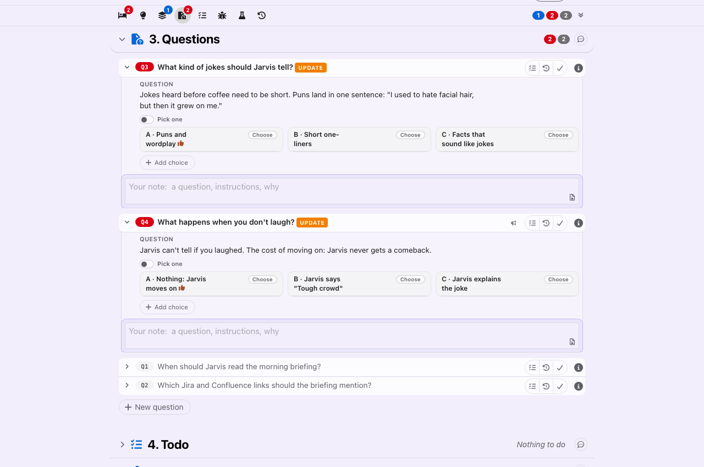
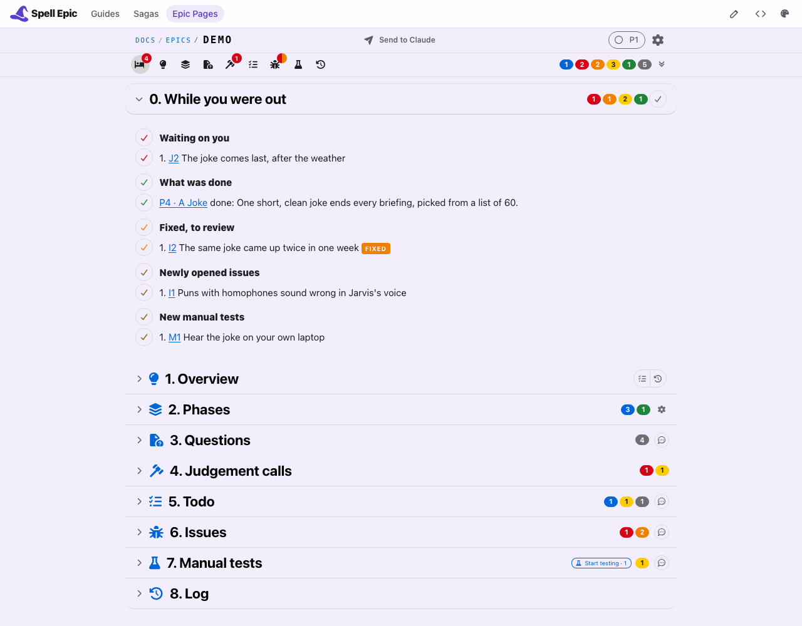
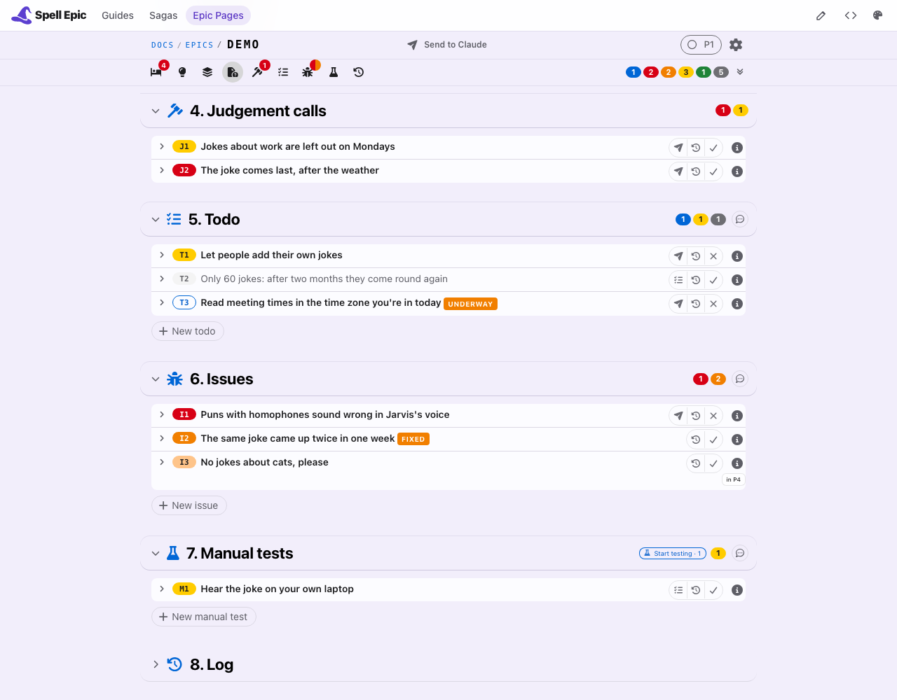

Epic Demo Rundown
The staged epic demo, stage by stage: what you click, what the room sees, and what to say while Claude "thinks". About 20 minutes.
staged-demo/, its cheat sheet and the demo risks listYou ask for a feature in one line, and Claude plans it on a page you both edit: it asks its questions there, you agree the plan with two presses, it builds a phase, and you come back to a summary of what happened. Only the thinking is pre-written, so nobody waits; every page, button and command is the real one.
The feature: a Morning Briefing for Jarvis. Say "good morning", hear your meetings, links, weather and a joke.
| Stage | Starts at |
|---|---|
| 0. Install, one command | before |
| 1. Paste, and the analysis | 0:00 |
| 2. Two questions | 2:00 |
| 3. The Overview, and Accept | 4:00 |
| 4. Four phases, and picking the Joke | 7:00 |
| 5. Building, and questions mid-stream | 10:00 |
| 6. A Joke done, and "While you were out" | 13:00 |
| 7. The close, then reset | 18:00 |
- Stop merging into main by 07:30: a merge restarts the page server, and the side bar waits for it.
epic agentsshows none running, andepic turnsis free.-
In a terminal at
~/www/spell,epic demo checksays "staged demo ready" and "nothing left from an earlier run". Leftovers:epic demo reset, then check again. - Reload the VS Code window, so the side bar and the plugin are fresh.
- Light theme: projectors wash dark out.
- Zoom:
Cmd +twice in VS Code, 125% in the browser. - One window: the Claude panel on the left, the Review tab on the right, the terminal closed.
- Do Not Disturb on; Slack and Mail closed.
- A NEW Claude Code tab in the
spellwindow, not inside a worktree's window. -
The paste ready:
00-paste.mdopen beside the tab, its box ready to copy. - A backup screen recording of a run (
Cmd Shift 5), in case the live one stalls. - Power cable in; the display mirrored, or VS Code on the projector.
- Nothing happens after an Accept: press Send, the paper plane. It sends the Accept at once.
- Claude says "Got your pick" before Accept Phases: press Accept Phases. The pick is kept.
- You pressed Send before Accept: Claude says "press Accept ... when it looks right". Press it.
- Claude is stuck: type
nextin the chat. It carries on from where the page is. - The side bar says "waiting for the page server": something merged. It loads by itself once it answers.
-
The Review tab is empty:
epic open demoin a terminal, or the checklist button in its title bar. - A permission prompt: answer it on screen, and say why it asks.
- The live run stalls for good: play the backup recording.
What you do
-
Show the Install part of
00-paste.md. Don't run it: this machine has it already. -
In any git repo with at least one commit, one command:
npx spell@next epic init
What they see
- It asks your name and a colour, installs the Claude Code plugin and the VS Code extension, makes the shared repo for the pages, and starts a small local server that shows them.
- A Claude Code session already open needs
/reload-pluginsbefore/epic.
What to say
- One command.
- It works in any git repo, on GitHub or GitLab.
- No Spell needed: your code stays as it is, plus one config file and a block in
.gitignore.
Likely questions
-
epic: command not found?epiclives in~/.local/bin, which must be on yourPATH;epic initprints the line to add.export PATH="$HOME/.local/bin:$PATH" - What do I need first? Claude Code, VS Code, git, Node 24.11 or later, and
ghorglab, logged in.
What you do
- In the new Claude tab, type
/epic demo, with the space. -
Paste the box from
00-paste.md: the ask, and the code it starts from. - Press Enter.
What they see
- Four silly working lines, about 10 seconds each: "Defragmenting the vibes…".
- Claude's take in the chat: four parts, each its own
BriefingSource, two questions. - The Morning Briefing epic page opens in the Review tab, on the right.
What to say
- One line starts an epic. The plan doesn't live in the chat: it's a page, beside the code.
- The chat scrolls away by morning. The page stays true while it's built, and after the merge.
- A real epic also gets its own branch and worktree, a second checkout beside the repo, so the files you're in aren't touched until you merge. Several epics run at once that way.
- The working lines are the only fake part: the thinking is pre-written so you don't wait.
Likely questions
- Is this really Claude? The page, buttons and commands are real; only the analysis is pre-written, and a real one takes a few minutes.
- Do I need VS Code? No: the pages are plain HTML on a small local server, so any browser shows them, and VS Code puts them in the side bar.
What you do
- Point at the red 2 on the Questions button in the page's toolbar.
- Click it, and unfold Q1, then Q2. Don't answer yet.
What they see
- Q1: "When should Jarvis read the morning briefing?"
- Q2: "Which Jira and Confluence links should the briefing mention?"
- Three option cards each, one recommended, with why and what it costs.

What to say
- An agent either guesses, or sits waiting for you. Here the question goes on the page instead.
- Each comes with its options, what each costs, and the one Claude recommends. You answer when you have time.
- Red means it needs you. The colours on this page say whose turn it is.
- Every item has a short id you can say out loud: "pick B on Q1" works in the chat too.
Likely questions
- What if no option fits? Each question takes a note, pictures welcome, and Other.
- Can a teammate answer? Yes: the pages live in a git repo of their own, so two people can review one.
What you do
- Pick the recommended card on Q1 and on Q2.
- Scroll to 1. Overview. Read its two-sentence summary aloud.
- Unfold "How it works", and its folded code block,
greetings.ts. - Press Accept Overview: the green thumbs up on the Overview's title row.
What they see

- After Accept: working lines, then the page moves on to its Phases stage.
What to say
- The Overview is what Claude understood, short enough to read in a minute.
- Accept Overview says "you understood the job". Nothing is built before both Accepts.
- Every answer rewrites the Overview, its changed words in orange.
- The note box under each part takes a why, a question or a picture.
- In a real run, Accept waits 5 minutes so you can take it back. The demo sends it at once.
Likely questions
- What if it misunderstood? Write in the note box or comment with the bullhorn, and Send; it rewrites, and you Accept when it is right.
- Can I skip the Accepts? Yes: "go" in the chat.
What you do
- Unfold 2. Phases, and walk down P1 to P4: each has a Symptom, Goal, Changes and Claude's plan.
- On P4 · A Joke's title row, press Looks good: the thumbs up, left of the clock.
- Press Accept Phases, on the Phases title row.
What they see

- After Accept: P4 · A Joke starts, and the other three stay to do.
What to say
- Each phase has a build plan: the steps, and how it'll be checked. One press agrees them all, up front.
- After that it builds without stopping. No "shall I carry on?" waiting for you at 3am.
- The parts don't depend on each other, so I pick the order: the joke first, the one part that's real today.
- Before a phase closes, a second agent holds its diff up against the plan I accepted.
- Pick A Joke: every later step's words are about the joke.
- Forget the thumbs up and press Accept Phases anyway: it builds A Joke.
- The clock is Defer, which moves a phase to the end. You don't need it.
Likely questions
- Can I change the plan later? Yes: Revisit a phase with a note, add one, or Defer it to the end.
- How big is a phase? Hours of agent work, committed as one
P4: A Joke -- ....
What you do
- While the working lines run, talk.
- Open 3. Questions: Q3 and Q4 are new.
- Pick an answer on each, then press Send, the paper plane at the top.
What they see
- The phase pill shows P4 under way, and the status says "Building A Joke".
- Q3: "What kind of jokes should Jarvis tell?" Q4: "What happens when you don't laugh?"
- After Send: six working lines, about 15 seconds each, "building".

What to say
- Named background agents build in the epic's worktree. The session I typed into stays free to answer me.
- Questions that come up mid-build go on the page too, and it keeps building what doesn't depend on them.
- Send hands everything I marked to the session at once. Auto Send does it after two quiet minutes.
- So I can walk away, or start another epic in another window.
Likely questions
- What if I don't answer? Calls it can make itself, it makes and records; only the ones that need you wait.
-
Does it run the tests? Yes: a phase's Done list ends with a
Checked:line, each check and what it printed.
What you do
- The page opens at 0. While you were out. Read it top to bottom.
- Then the toolbar buttons, one by one: Judgement calls, Todo, Issues, Manual tests.
- Unfold J2 to show its two options. Point at the coloured counts at the top right.
- Open 2. Phases: P4 is green, P1 to P3 still to do.
What they see


| Colour | Means | On the page |
|---|---|---|
| Red | needs you | J2, where the joke goes; I1, puns that sound wrong |
| Orange | fixed, yours to look at | I2, the same joke twice in a week |
| Light orange | your own request, done | I3, no cat jokes |
| Yellow | open, but calm | J1, no work jokes on Mondays; T1, your own jokes; M1, hear it yourself |
| Blue | Claude is on it | T3, time zones, for P1 |
| Grey | a limit to know about | T2, only 60 jokes |
| Green | done | P4 · A Joke |
What to say
- Coming back cold, you read section 0, not the whole page. It shows only what changed since you last looked.
- Judgement calls are what it decided without you, written down rather than asked at 3am. Yellow wouldn't surprise you; red is one you'd want a say in, with options.
- The colours say whose turn it is: red you, blue Claude, green nobody's.
- "No cat jokes" was my request: it comes back light orange, done, until I look.
- M1 is the check only a person can do: exact steps, and what should happen.
Likely questions
- Who reviews all this? You, when you like: Approve, Revisit or Do this on each, or "approve J1" in the chat.
- Isn't that a lot of items? It can be, and nobody reviews them for you; click a colour's count to hide those.
What you do
- Leave the page up, and give the closing pitch below.
-
After the room has gone, in a terminal:
epic demo reset, thenepic demo check. - Close the demo's Claude tab. The next run starts from "Before you start".
What they see
- The finished page, while you talk. The reset happens after.
What to say
- When the last phase is done, the epic writes its guide, a short write-up for the next person, then merges.
- The worktree goes; the page stays, as the record of every question and call.
- Already use superpowers? It lives alongside: the epic owns the plan, the worktree and the finish; superpowers' test-first and debugging skills work inside a phase.
- Works with GitHub or GitLab, Claude Code first, Codex beside it.
Likely questions
- Can I try it today? Yes:
npx spell@next epic initin a git repo. - Will two plugins fight? No: in an epic's worktree superpowers is told to stand aside for planning, worktrees and finishing.
A plan you and Claude both edit, live, and a worktree per epic. You review on the page; Claude builds.
npx spell@next epic init- Say
@next:latestis still the old 0.8.1. -
A repo set up this way may show no top-bar tabs: show the Epics page at
/epics/index.html.
- Epics: plan on a page, build with your coding agent: why you'd want it, and setting it up
- How epics work: sagas, epics and guides, the page in pictures
- Epics with superpowers: how the two plugins share a session
epic demo reset
epic demo check- Check says "staged demo ready" and "nothing left from an earlier run".
-
To change any words for the next run, edit the step files in
staged-demo/, or tell Claude the direction;epic demo checkafter.
Where to point them
-
Upgrading:
epic upgradefetches the newestspell@nextand points the plugin at it; then/reload-pluginsin any open Claude Code session. It ships in the nextspell@next. -
The docs: the Docs tab on the epic pages' top bar;
on 0.8.12, the epics README on GitHub:
setting up, the pages, the skills, the
epiccommand. - When something goes wrong: the epic FAQ, what you see, why, and the fix.
What to say
- Staying current is one command.
- Everything I showed is written down, with a FAQ for when it goes wrong.